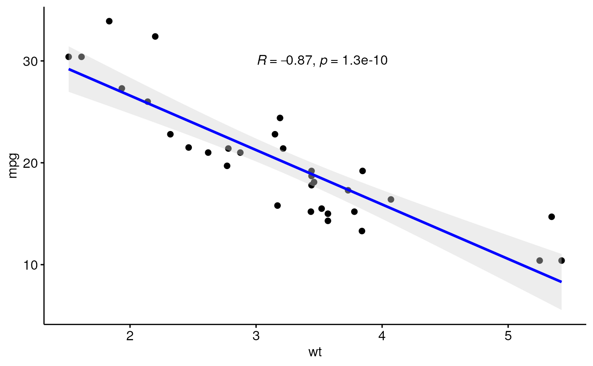
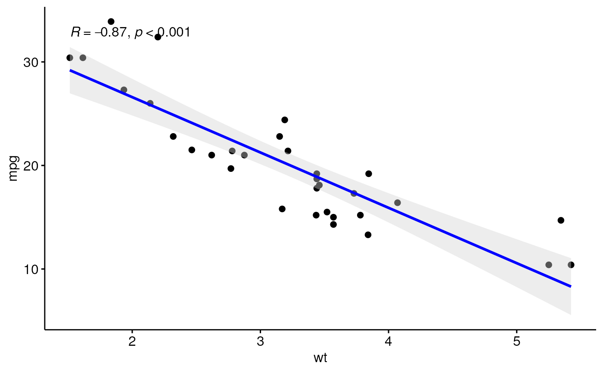
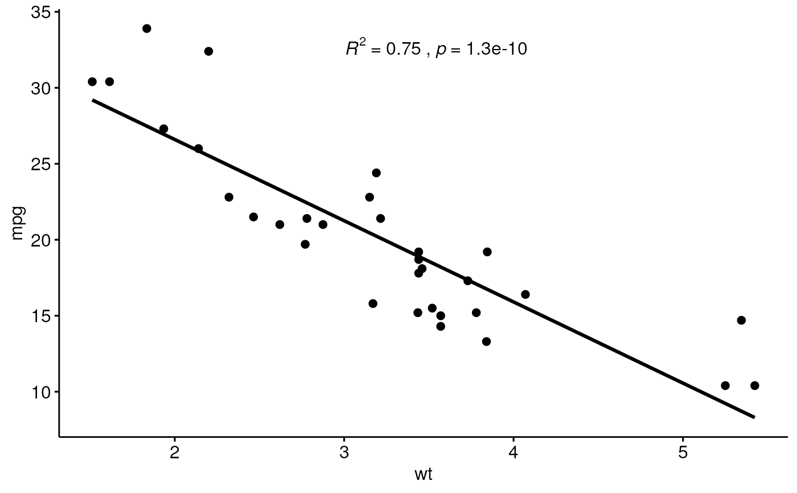
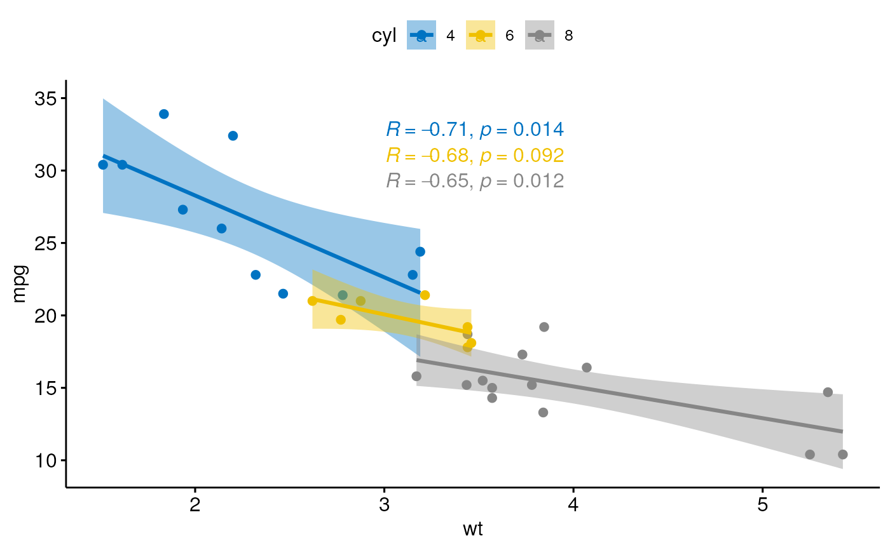
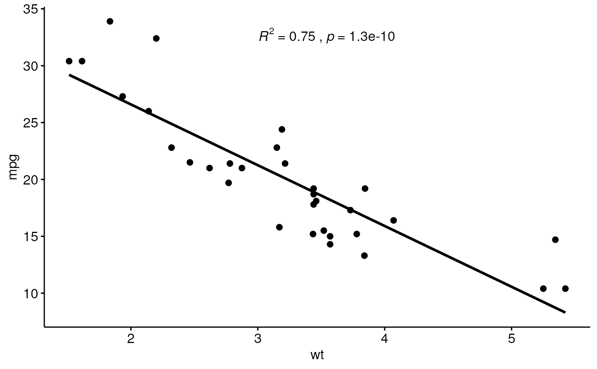
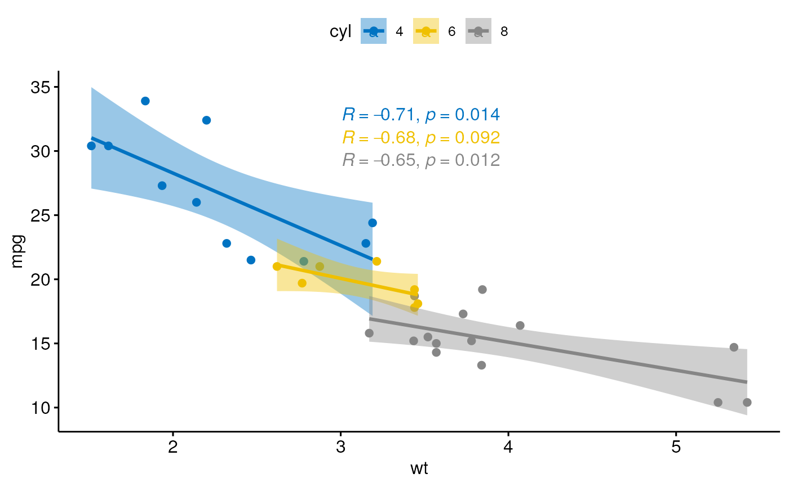

Add correlation coefficients with p-values to a scatter plot. Can be also used to add `R2`.
stat_cor(
mapping = NULL,
data = NULL,
method = "pearson",
alternative = "two.sided",
cor.coef.name = c("R", "rho", "tau"),
label.sep = ", ",
label.x.npc = "left",
label.y.npc = "top",
label.x = NULL,
label.y = NULL,
output.type = "expression",
digits = 2,
r.digits = digits,
p.digits = digits,
r.accuracy = NULL,
p.accuracy = NULL,
geom = "text",
position = "identity",
na.rm = FALSE,
show.legend = NA,
inherit.aes = TRUE,
...
)Arguments
- mapping
Set of aesthetic mappings created by
aes(). If specified andinherit.aes = TRUE(the default), it is combined with the default mapping at the top level of the plot. You must supplymappingif there is no plot mapping.- data
The data to be displayed in this layer. There are three options:
If
NULL, the default, the data is inherited from the plot data as specified in the call toggplot().A
data.frame, or other object, will override the plot data. All objects will be fortified to produce a data frame. Seefortify()for which variables will be created.A
functionwill be called with a single argument, the plot data. The return value must be adata.frame, and will be used as the layer data. Afunctioncan be created from aformula(e.g.~ head(.x, 10)).- method
a character string indicating which correlation coefficient (or covariance) is to be computed. One of "pearson" (default), "kendall", or "spearman".
- alternative
a character string specifying the alternative hypothesis, must be one of "two.sided" (default), "greater" or "less". You can specify just the initial letter.
- cor.coef.name
character. Can be one of
"R"(pearson coef),"rho"(spearman coef) and"tau"(kendall coef). Uppercase and lowercase are allowed.- label.sep
a character string to separate the terms. Default is ", ", to separate the correlation coefficient and the p.value.
- label.x.npc, label.y.npc
can be
numericorcharactervector of the same length as the number of groups and/or panels. If too short they will be recycled.If
numeric, value should be between 0 and 1. Coordinates to be used for positioning the label, expressed in "normalized parent coordinates".If
character, allowed values include: i) one of c('right', 'left', 'center', 'centre', 'middle') for x-axis; ii) and one of c( 'bottom', 'top', 'center', 'centre', 'middle') for y-axis.
If too short they will be recycled.
- label.x, label.y
numericCoordinates (in data units) to be used for absolute positioning of the label. If too short they will be recycled.- output.type
character One of "expression", "latex", "tex" or "text".
- digits, r.digits, p.digits
integer indicating the number of decimal places (round) or significant digits (signif) to be used for the correlation coefficient and the p-value, respectively..
- r.accuracy
a real value specifying the number of decimal places of precision for the correlation coefficient. Default is NULL. Use (e.g.) 0.01 to show 2 decimal places of precision. If specified, then
r.digitsis ignored.- p.accuracy
a real value specifying the number of decimal places of precision for the p-value. Default is NULL. Use (e.g.) 0.0001 to show 4 decimal places of precision. If specified, then
p.digitsis ignored.- geom
The geometric object to use to display the data, either as a
ggprotoGeomsubclass or as a string naming the geom stripped of thegeom_prefix (e.g."point"rather than"geom_point")- position
Position adjustment, either as a string naming the adjustment (e.g.
"jitter"to useposition_jitter), or the result of a call to a position adjustment function. Use the latter if you need to change the settings of the adjustment.- na.rm
If FALSE (the default), removes missing values with a warning. If TRUE silently removes missing values.
- show.legend
logical. Should this layer be included in the legends?
NA, the default, includes if any aesthetics are mapped.FALSEnever includes, andTRUEalways includes. It can also be a named logical vector to finely select the aesthetics to display.- inherit.aes
If
FALSE, overrides the default aesthetics, rather than combining with them. This is most useful for helper functions that define both data and aesthetics and shouldn't inherit behaviour from the default plot specification, e.g.borders().- ...
other arguments to pass to
geom_textorgeom_label.
Computed variables
- r
correlation coefficient
- rr
correlation coefficient squared
- r.label
formatted label for the correlation coefficient
- rr.label
formatted label for the squared correlation coefficient
- p.label
label for the p-value
- label
default labeldisplayed by
stat_cor()
See also
Examples
# Load data
data("mtcars")
df <- mtcars
df$cyl <- as.factor(df$cyl)
# Scatter plot with correlation coefficient
#:::::::::::::::::::::::::::::::::::::::::::::::::
sp <- ggscatter(df, x = "wt", y = "mpg",
add = "reg.line", # Add regressin line
add.params = list(color = "blue", fill = "lightgray"), # Customize reg. line
conf.int = TRUE # Add confidence interval
)
# Add correlation coefficient
sp + stat_cor(method = "pearson", label.x = 3, label.y = 30)

# Specify the number of decimal places of precision for p and r
# Using 3 decimal places for the p-value and
# 2 decimal places for the correlation coefficient (r)
sp + stat_cor(p.accuracy = 0.001, r.accuracy = 0.01)

# Show only the r.label but not the p.label
sp + stat_cor(aes(label = ..r.label..), label.x = 3)
#> Warning: The dot-dot notation (`..r.label..`) was deprecated in ggplot2 3.4.0.
#> ℹ Please use `after_stat(r.label)` instead.
#> ℹ The deprecated feature was likely used in the ggpubr package.
#> Please report the issue at <https://github.com/kassambara/ggpubr/issues>.
 # Use R2 instead of R
ggscatter(df, x = "wt", y = "mpg", add = "reg.line") +
stat_cor(
aes(label = paste(..rr.label.., ..p.label.., sep = "~`,`~")),
label.x = 3
)

# Color by groups and facet
#::::::::::::::::::::::::::::::::::::::::::::::::::::
sp <- ggscatter(df, x = "wt", y = "mpg",
color = "cyl", palette = "jco",
add = "reg.line", conf.int = TRUE)
sp + stat_cor(aes(color = cyl), label.x = 3)

# Use R2 instead of R
ggscatter(df, x = "wt", y = "mpg", add = "reg.line") +
stat_cor(
aes(label = paste(..rr.label.., ..p.label.., sep = "~`,`~")),
label.x = 3
)

# Color by groups and facet
#::::::::::::::::::::::::::::::::::::::::::::::::::::
sp <- ggscatter(df, x = "wt", y = "mpg",
color = "cyl", palette = "jco",
add = "reg.line", conf.int = TRUE)
sp + stat_cor(aes(color = cyl), label.x = 3)
